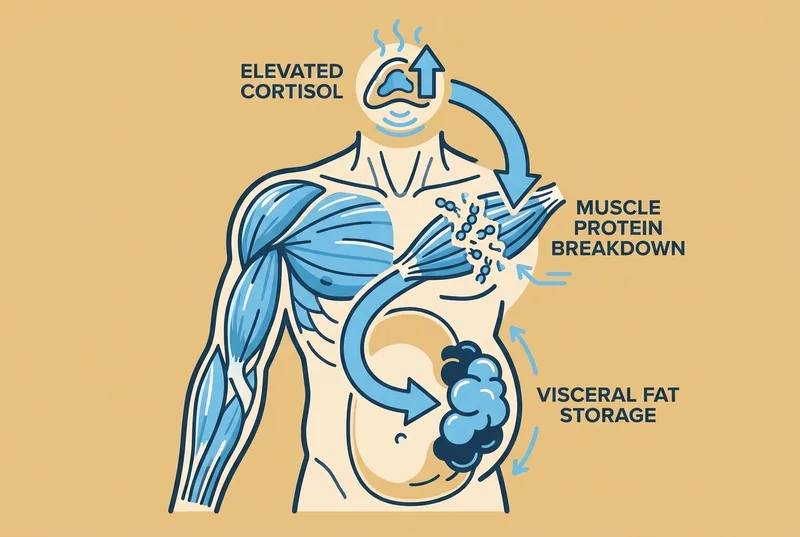
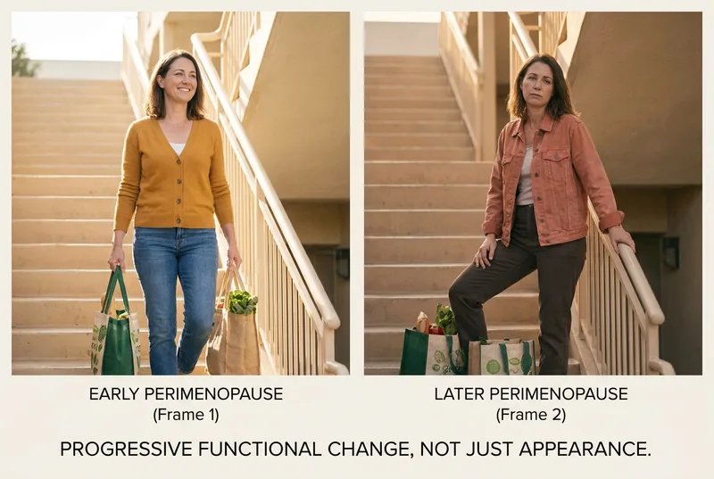
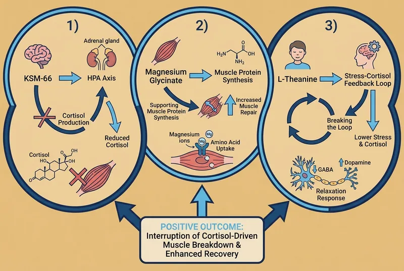
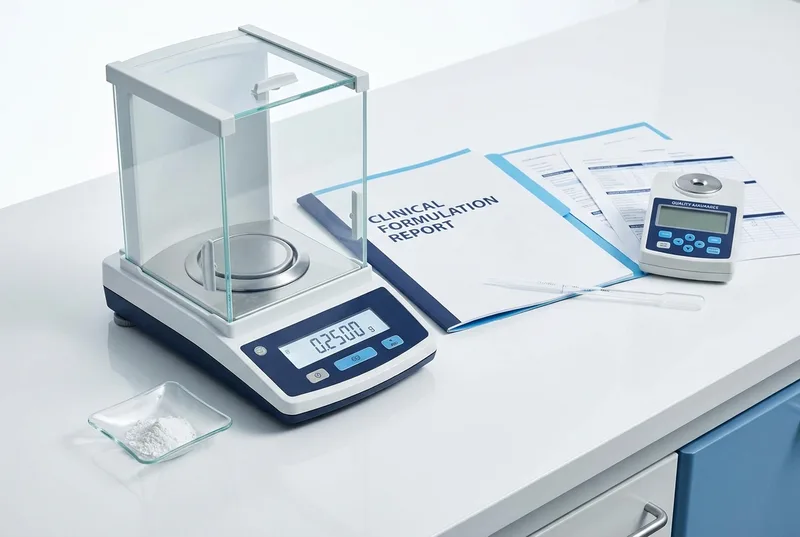

The hidden reason perimenopause weight gain feels different , and why addressing cortisol could stop the cycle
The scale says you've gained 15 pounds. But here's what it's not telling you.
Ten of those pounds are fat. The other five? That's muscle you've lost.
Your body didn't just store fat during perimenopause. It ate your muscle to make room for it.
This isn't the weight gain you remember from your 30s , where a few weeks of careful eating could reverse the damage. This is something entirely different. This is metabolic cannibalization.
And once you understand what's actually happening inside your body, everything about perimenopause weight gain makes perfect, terrifying sense.
Linda noticed it first in photos. Not the belly , she'd been fighting that for months. It was her arms. They looked... soft. Undefined. Like the muscle tone she'd maintained her entire adult life had simply melted away.
Then came the jeans that fit differently. Not just tight around the waist , that she expected. But loose in the thighs and seat. Her body was reshaping itself from the inside out.
The exhaustion felt different too. Not just tired from poor sleep, but heavy. Like her body had forgotten how to feel strong.
Linda had read about perimenopause weight gain. She'd prepared for some belly fat, some metabolism slowdown. What she hadn't expected was to feel like she was disappearing , her strength, her shape, her energy , while simultaneously getting bigger where she didn't want to be.
Her doctor ran labs. Thyroid normal. Hormones 'appropriate for her age.' Everything looked fine on paper. But Linda knew something fundamental had shifted.
She tried cutting calories. She tried increasing cardio. She tried strength training three times a week. Some weeks the scale would drop a pound or two. But her body composition kept shifting in the wrong direction. More soft, less solid. More belly, less everywhere else that mattered.
That's when Linda learned about muscle cannibalization. And realized she hadn't been fighting regular weight gain at all.
Here's what's actually happening , and why it feels so different from any weight gain you've experienced before.
During perimenopause, elevated cortisol doesn't just store fat. It breaks down muscle protein to fuel that storage.
Think of it like this: imagine your body is a house during a food shortage. Cortisol is the survival system that decides what gets rationed and what gets consumed to keep the essential systems running.
In a prolonged 'emergency' , which is how your body interprets chronic perimenopausal stress , cortisol makes a calculated decision. It raids the muscle pantry to stock the belly warehouse.
Muscle tissue requires a lot of energy to maintain. Visceral fat, by comparison, is cheap storage. So cortisol literally breaks down your muscle protein, converts it to glucose, and when that glucose isn't immediately needed, stores it as belly fat.
This process is called gluconeogenesis , your body eating its own muscle to feed fat accumulation.
It's not just weight gain. It's metabolic reorganization. Your body is trading expensive, energy-burning muscle for cheap, space-taking fat. And the higher your cortisol stays, the faster this trade happens.
This is why the scale might only show 15 pounds gained, but you feel like you've gained 30. You're not just heavier , you're fundamentally less solid.

The muscle cannibalization doesn't stop at aesthetics. Every pound of muscle you lose creates a cascade of metabolic problems that compound over time.
Your metabolic rate drops. Muscle tissue burns calories even at rest. Fat tissue doesn't. For every pound of muscle lost, your body burns roughly 50 fewer calories per day. Lose 10 pounds of muscle, and your body now requires 500 fewer daily calories to maintain the same weight.
Insulin resistance accelerates. Muscle tissue is your body's primary glucose disposal system. Less muscle means glucose has fewer places to go , so it gets stored as fat. The less muscle you have, the more efficient your body becomes at creating and storing fat from the same foods that used to maintain your weight.
The cortisol cycle intensifies. Muscle loss creates physical stress, which triggers more cortisol production, which breaks down more muscle. You're caught in a biological feedback loop that gets stronger every month you don't interrupt it.
And here's the part that makes recovery so much harder: muscle loss accelerates with age. The window for reversing this process without medical intervention gets narrower every month.
After age 50, women lose muscle mass at roughly 2% per year under normal circumstances. With elevated cortisol driving active muscle breakdown, that rate can double or triple.
The strength you remember having, the body composition you maintained effortlessly in your 30s , that's not gone forever. But it is being consumed.

Breaking this cycle requires addressing the root driver: the HPA axis dysfunction that's keeping cortisol chronically elevated.
Your hypothalamic-pituitary-adrenal axis is like your body's stress control center. During perimenopause, it gets stuck in 'emergency mode' , constantly producing cortisol as if you're under physical threat.
Interrupting muscle cannibalization requires three specific interventions, working together:
First: HPA axis regulation. KSM-66 Ashwagandha has been studied specifically for its ability to reduce cortisol production at the source. In peer-reviewed trials, participants taking 300mg daily showed significant reductions in serum cortisol levels within 8 weeks.
Think of it as telling your stress control center: the emergency is over. You can stop raiding the muscle stores now.
Second: Muscle protein synthesis support. Magnesium glycinate plays a direct role in protein synthesis , the process of building and maintaining muscle tissue. When cortisol is breaking down muscle faster than your body can rebuild it, magnesium provides the raw materials for repair.
Third: Breaking the stress-cortisol feedback loop. L-theanine at clinical doses promotes calm alertness without sedation. It doesn't just mask stress symptoms , it interrupts the neurological pattern that triggers cortisol spikes in the first place.
Together, these three ingredients address both sides of the muscle cannibalization equation: they reduce the cortisol that's breaking down muscle, and they support the biological processes that rebuild it.
This isn't about reversing years of damage overnight. It's about stopping the active breakdown so your body can start the repair process it's been too stressed to attempt.

Most cortisol supplements on the market are designed for basic stress relief , the kind that helps you feel calmer during your commute or sleep better after a difficult day.
Stopping active muscle cannibalization requires clinical precision.
The doses matter. The KSM-66 studies that showed significant cortisol reduction used 300mg daily , not the 50-100mg found in most 'stress support' formulas. Lower doses might help with general anxiety. They won't interrupt gluconeogenesis.
The forms matter. Generic ashwagandha root powder contains inconsistent levels of active withanolides. KSM-66 is standardized to contain the specific compounds that were studied for cortisol regulation. Same plant, entirely different clinical reliability.
The combination matters. Cortisol reduction alone isn't enough if your body lacks the building blocks to synthesize new muscle protein. You need magnesium glycinate for synthesis support and L-theanine to prevent stress-triggered cortisol spikes that undo the progress.
And perhaps most importantly, the delivery method matters. Muscle cannibalization is a daily, ongoing process. It requires daily, consistent intervention.
Pills are easy to forget. Powders mixed into drinks become rituals. And when you're rebuilding your relationship with your body after it's been working against you, that daily moment of care , that conscious choice to interrupt the breakdown cycle , becomes part of the healing process itself.
"I never realized how much the daily ritual mattered until I started looking forward to it. It's like telling my body every afternoon: we're stopping the emergency. We're starting the repair." , Jennifer K.

FeelGood was formulated specifically for women experiencing cortisol-driven muscle loss during perimenopause.
Every ingredient is included at the exact dose studied for cortisol regulation and muscle preservation:
300mg KSM-66 Ashwagandha Root Extract , the specific form used in peer-reviewed trials showing significant cortisol reduction within 8 weeks. Not generic ashwagandha powder, but the standardized extract that contains consistent levels of bioactive withanolides.
100mg Magnesium Glycinate , the most bioavailable form of magnesium, chelated for optimal absorption. Magnesium plays a direct role in protein synthesis, helping your body rebuild muscle tissue as cortisol levels normalize.
400mg L-Theanine , double the standard dose, because the calm-alertness effect that interrupts stress-triggered cortisol spikes is dose-dependent. At 400mg, L-theanine provides measurable neurological calm without sedation.
Each serving comes in a raspberry lemonade powder that dissolves completely in water. No pills to remember, no complicated timing requirements. Just one glass daily, preferably in the afternoon when cortisol naturally begins its descent.
The powder format isn't just convenient , it's physiological. Your brain associates the act of preparation, the ritual of mixing, and the sensory experience of drinking with the intervention itself. You're not just taking a supplement. You're creating a daily moment that signals to your nervous system: we're choosing calm over cortisol.
Third-party tested for purity and potency. Made in a GMP-certified facility. No artificial colors, no fillers, no ingredients you can't pronounce.
For most women, the shift happens in stages. Sleep quality typically improves within 10-14 days as cortisol patterns begin to stabilize. Energy and mood follow over the next 2-4 weeks. The physical changes , strength returning, body composition shifting , become noticeable over 8-12 weeks as muscle breakdown slows and protein synthesis increases.
This isn't a quick fix. It's an intervention in an ongoing biological process. But for women who've watched their bodies change in ways that felt completely out of their control, that intervention can feel like reclaiming their physiology.
The women who've interrupted their cortisol-driven muscle loss describe the change as feeling like themselves again , but stronger.
"I didn't realize how much strength I'd lost until I started getting it back. By week 8, I could carry groceries upstairs without my arms shaking. By week 12, my jeans fit completely differently , not just looser around the waist, but fitted through the thighs again. I felt solid." , Patricia M.
"The scale barely moved, but my body completely changed shape. My husband said I looked 'substantial' again , not skinny-fat like I'd been feeling for months. I actually have muscle definition in my arms for the first time in two years." , Karen D.
"Week 3 was when I noticed my afternoon crashes were gone. Week 6 was when I realized I could do push-ups again , real ones, not modified. Week 10 was when I looked in the mirror and recognized my body. Not what it was at 30, but what it could be at 47." , Maria S.
"I stopped feeling like my body was working against me. The daily FeelGood ritual became my way of choosing repair over breakdown. Every single day, I'm telling my cortisol: we're done with the emergency. It's time to rebuild." , Linda R.
Muscle loss accelerates during perimenopause. Every month that cortisol continues breaking down muscle protein is a month that your metabolic rate drops, your insulin sensitivity decreases, and your body composition shifts further away from where you want it to be.
The women who address cortisol-driven muscle cannibalization early in perimenopause find the reversal process manageable. The women who wait until post-menopause often require medical intervention to achieve the same results.
Your body is biologically primed for this intervention right now. The question is whether you'll interrupt the muscle breakdown cycle while your body still has the hormonal flexibility to respond, or whether you'll let it continue until the damage requires more intensive measures to reverse.
Imagine looking in the mirror six months from now and recognizing the woman looking back at you. Not the 30-year-old version, but the strong, substantial, vital version of who you are right now. Imagine your body working with you instead of against you — building instead of breaking down.
A single DEXA scan to measure muscle loss costs $150-300. Monthly functional medicine consultations to address cortisol dysregulation run $200-400 each. Hormone replacement therapy with monitoring averages $150+ per month. Personal training sessions to rebuild lost muscle cost $80-120 each.
FeelGood is $38.70 per month — less than $1.30 per day. Less than your morning coffee, and far less than the medical interventions required when muscle cannibalization goes unchecked.
Most women notice strength returning over 8-12 weeks, which is why the 3-month supply is the most popular choice. Consistent daily intervention gives your body time to interrupt the breakdown cycle and begin the repair process.
Try FeelGood for 60 days. If you don't notice improved strength, better body composition, or the return of that solid feeling you remember, contact our support team and we'll refund every penny within 48 hours. No forms, no hoops, no questions about why it didn't work for you.
Your muscle cannibalization cycle has been running long enough. The women who interrupt it now, during perimenopause, avoid the steeper intervention curve that comes later.
60-Day Money-Back Guarantee · Made in UAE
Try FeelGood risk-free for 60 days. If you don't experience improved strength and body composition, we'll refund your full purchase price.